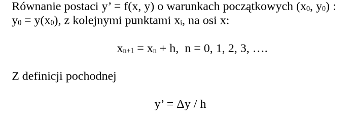
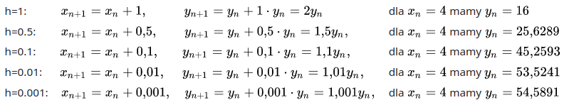

Metoda Heuna
Założenia
Opis
Metoda Heuna jest udoskonaleniem metody Rungego-Kutty, która z
kolei jest szczególnym przypadkiem metody Eulera. Modyfikacja
polega na obliczaniu współczynnika nachylenia stycznej Δy za
pomocą średniej arytmetycznej:
Zbieżność
Zależność dokładności rozwiązania od wielkości kroku najlepiej sprawdzić na przykładzie równania różniczkowego, którego rozwiązanie łatwo jest znaleźć za pomocą wzoru. Przykładem może być równanie y' = y dla warunków początkowych x0 = 0 , y0 = 1 , którego rozwiązaniem jest funkcja y = exp(x). Zastosowanie metody Eulera dla takiego równania bardzo wyraźnie zależy od kroku h.

W rzeczywistości exp( 4 ) ≈ 54,598
Błąd obliczeń rozwiązania równania różniczkowego metoda Eulera
maleje wraz ze zmniejszaniem kroku h, ale rośnie wraz ze wzrostem
x - x0 dla każdej wartości h.